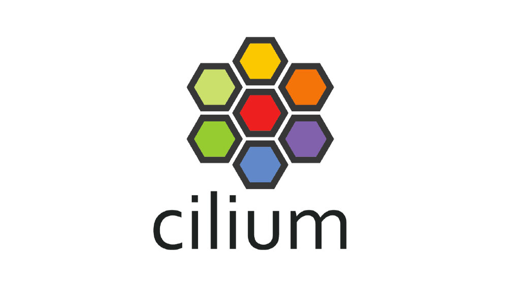
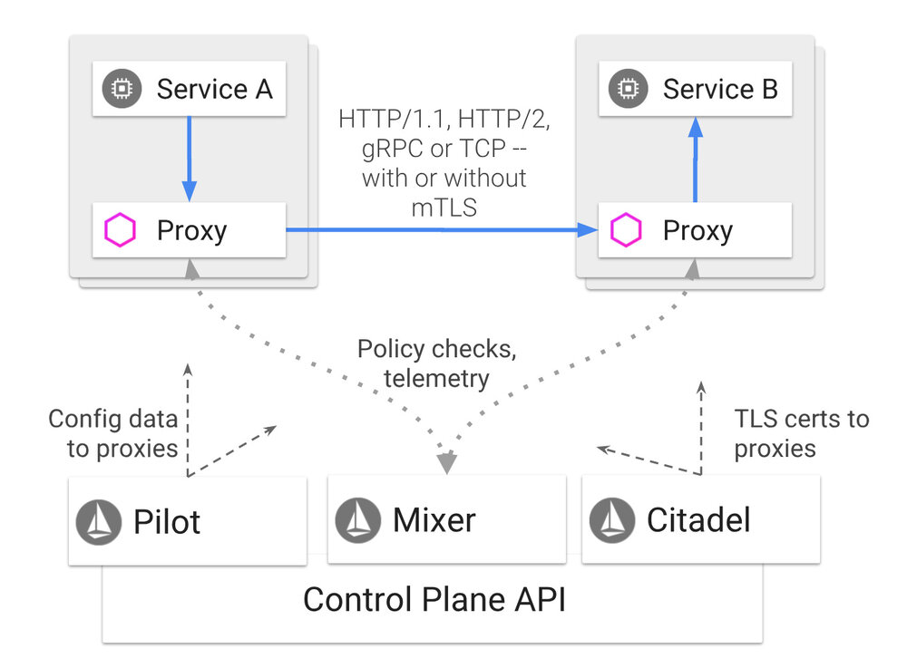
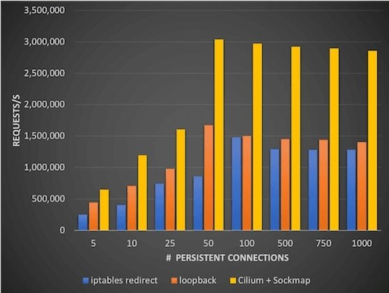
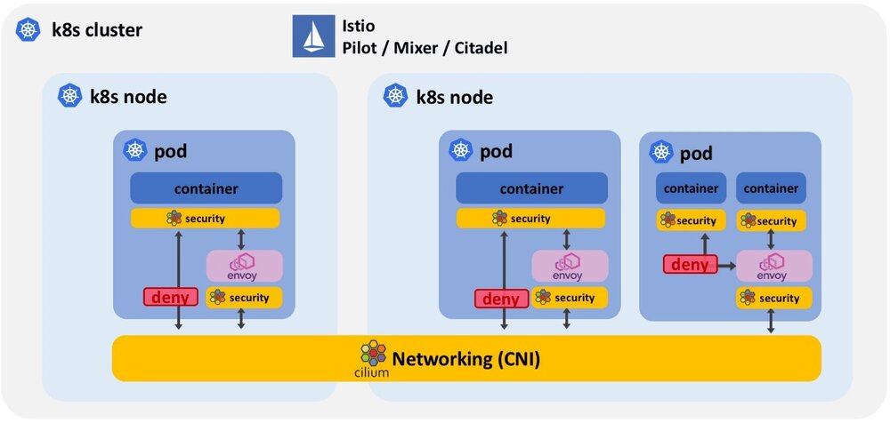
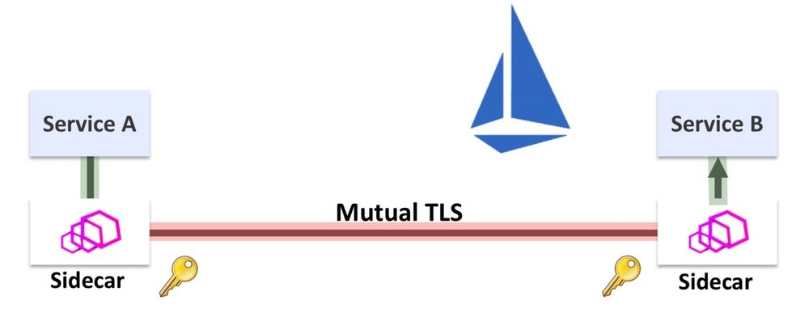
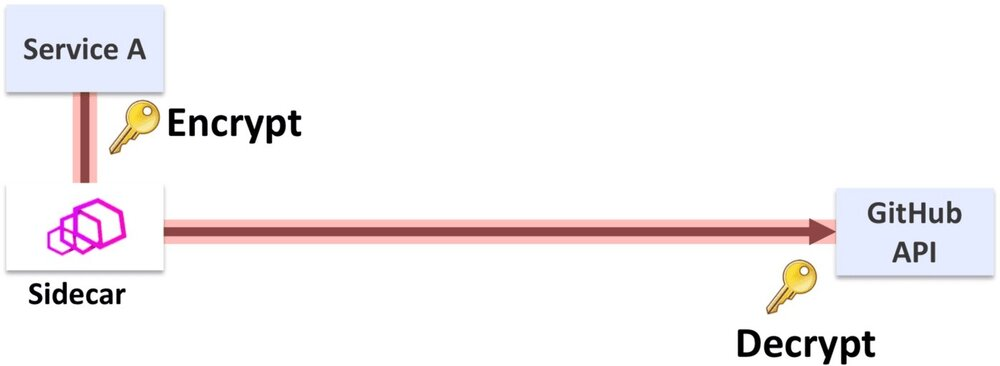
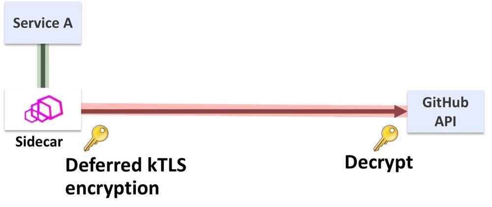
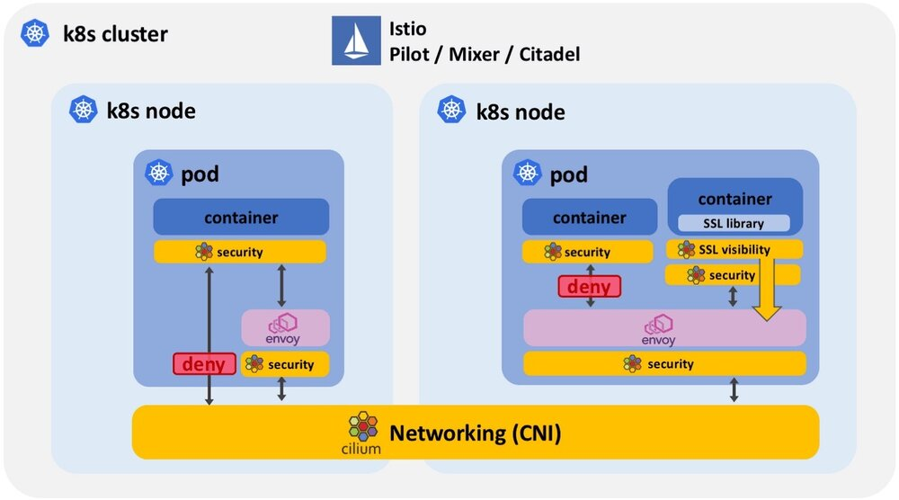

本文为翻译文章，点击查看原文。
8月1日Istio 1.0 发布，Cilium社区感谢所有Istio贡献者为此付出的巨大努力。我们很幸运能够参与社区活动，为Istio做出贡献，并帮助一些用户通过Istio和Cilium进行生产部署。如果您有兴趣在深入了解技术细节之前了解Istio + Cilium的用户故事，请考虑阅读HP FitStation团队（最大的Cilium + Istio用户之一）发布的以下Istio博客: Istio是惠普FitStation平台的游戏规则的改变者。
本博客将介绍BPF和Cilium如何增强Istio的一些细节：
- 增强安全
- 使用socket感知BPF程序为多容器pod提供最小权限
- 防止受损的sidecar代理和绕过sidecar协议
- 使用BPF强制所有应用程序流量经过sidecar代理
- 开启Istio对外部服务的支持
- 使用socket感知BPF程序和kTLS提供TLS链接加密的可视化和控制管理
- 性能
- 高效网络和socket重定向加速istio性能
Cilium是什么？
Cilium是一个开源软件，用于透明保护在使用Kubernetes、Docker和Mesos等Linux容器管理平台部署的应用程序服务之间的网络和API连接。
Cilium的基础是一种名为BPF的新Linux内核技术，这使得能够在Linux自身内动态植入强大的安全性，可见性和网络控制逻辑。除了提供传统的网络级安全性之外，BPF的灵活性还可以在API和进程级别上实现安全性，以保护容器或容器内的通信。由于BPF在Linux内核中运行，因此无需对应用程序代码或容器配置进行任何更改便可以应用和更新Cilium安全策略。
有关Cilium的更详细的介绍，请参阅Cilium简介部分。
Istio是什么？
Istio提供了一种通过负载均衡、服务间身份验证、监控等且没有侵入性创建部署服务网络的简便方法。可以通过在整个环境中部署特殊的sidecar代理来添加对服务的支持，该代理拦截微服务之间的所有网络通信，使用Istio的控制平面功能进行配置和管理。

您可以在Istio文档中阅读有关Istio概念和架构的更多信息。
Istio高效网络
Istio和Cilium之间最基本的协作形式是Cilium CNI插件通过将所有sidecar代理连接在一起并通过提供代理和Istio控制平面之间的连接，为Istio提供网络连接。Cilium还确保Istio托管服务可以与不受Istio管理的pod进行通信。
下图说明了Istio控制平面、sidecar代理和CNI插件如何相互叠加：

在这种模式下，所有Istio系统组件都受益于Cilium在Linux内核中基于BPF的高效网络功能。BPF是网络和数据包过滤技术（如iptables等）的替代方案。您可以在以下博客文章中找到有关BPF推动这一转变的原因的更多信息：为什么内核社区用BPF替换iptables？
Socket级别重定向加速Istio和Envoy
Istio服务网格架构要求将参与服务网格的所有pod的出站和入站请求的所有网络流量都要重定向到sidecar代理。Sidecar代理将终止所有TCP连接并执行诸如遥测、重试、路由、双向TLS之类的服务和代表服务的授权，并使用辅助所谓的上游TCP连接来到达目的地服务,这正是服务之间支持双向TLS,没有代码侵入性原因所在。然而，当使用标准的基于IP的工具（如iptables）实现重定向时，这种重定向可能会很费事，因为必须多次遍历整个TCP/IP堆栈。

Cilium充分使用了一个叫sockmap的令人兴奋的BPF功能。它允许过滤和重定向，基于套接字级别，使Cilium可以socket感知。此socket是应用程序用于发送和接收网络流量的接口。这允许在相同节点上实质上短路TCP socket，从而以完全透明的方式大幅加速应用程序和服务网格的sidecar代理的通信速度。应用程序和sidecar代理都不需要以任何方式进行修改。如果您有兴趣了解有关此用例的更多信息，请参阅位于奥斯汀的KubeCon 2018上的演示文稿——使用CIlium加速Envoy、Istio和Linux内核（录像、幻灯片）。
用Cilium增强Istio安全性
Cilium与Istio整合，以增强Istio的安全性。我们来看看Istio提供的安全属性：
- 双向TLS：如果发送者由Istio控制，则能够验证发件人的身份。这可以保护服务免受来自非法源服务欺骗IP地址的攻击请求。它还可以在Istio管理的所有服务之间启用基于TLS/SSL的加密。
- 授权：能够授权请求，包括过滤元数据（如HTTP协议字段，IP寻址和身份信息）以及调用其他授权插件（例如，执行令牌验证）。
LEVEL 1: 保护不受支持的协议和受损的sidecar（Cilium 1.0）
所需的第一个基本保护级别是将安全策略应用于Istio不支持的所有网络协议，包括UDP、ICMP和所有IPv6流量。任何此类流量都会绕过sidecar代理，从而通过Istio强制执行任何最终安全策略。无论协议如何，Cilium将pod之外所有网络流量应用L3/L4安全策略。如果遇到不支持的协议，则将丢弃该数据包。

安全化非IPv4/TCP协议
Cilium在pod之外提供安全策略，对于协议不受支持、重定向或由于某些其他原因而失败，将完全阻止或应用细粒度的安全规则到任何绕过代理的流量。
防止受损的sidecar
sidecar代理本身不受Istio安全规则的约束。受损的sidecar可以不受限制地访问网络。它还可以操纵自己的安全规则以变得更加宽松。除了Istio之外，Cilium还允许定义服务级别安全策略，并确保受损的sidecar代理只能以最小权限运行。
LEVEL2: 安全的多容器Pod（正在开发中）
Level 1 安全级别以pod、service为级别保护服务网格。它不提供容器内部的任何安全性，例如用于应用容器和sidecar容器之间的通信。
Level 2 安全级别通过使用socket感知BPF程序在socket级别提供分段，在同一个pod中引入容器和进程之间的分段。

-
强制所有应用流量流经sidecar: 通过使用socket感知BPF策略，Cilium可以确保应用程序的所有通信都必须通过sidecar进行入站和出站连接。保证应用程序容器本身不能从pod外部接收连接，或者在不通过sidecar代理的情况下向pod外部发出请求。
-
Pod中的最小安全权限：通过使用socket感知BPF程序锁定容器内部和进程级别的通信，其中一个容器中的安全漏洞不再导致整个容器被泄露。这尤其重要，因为sidecar容器可以直接访问pod中的任何其他容器，并且可以访问潜在的敏感信息。
有趣的事实
支持socket的BPF程序不仅限于基于IP的socket。安全策略也可以扩展到涵盖UNIX域socket。
外部服务的TLS可见性（正在开发中）
Istio依赖于对应用程序协议层（如HTTP）的可见性，以提供诸如基于URI的路由，基于HTTP头的授权和API请求级别遥测和跟踪等功能。通过将双向TLS与Istio Citadel管理的证书相互应用，可以在未加密的服务之间保持应用程序流量并在源服务器和目标服务的sidecar代理之间执行TLS加密来实现此可见性。

这适用于网格内部服务之间的连接。与网格之外的服务的通信几乎由应用程序本身进行TLS加密保证，以便在不可信的因特网上保护通信。

Linux的kTLS（内核TLS）工作原理最初是由Facebook的Dave Watson提出。它包括将数据的对称加密从应用程序中的SSL库迁移到Linux内核中的socket功能。这项工作的最初动机是纯粹的性能优化，因为使用kTLS比SSL库快3-4％。这对于经过SSL静态数据的提供者有足够的兴趣去继续。这项工作已经合并，并且可以在最新的Linux内核中使用。结合在Linux socket层注入的BPF程序的功能，kTLS实现了数据的透明可见性，否则此时已加密。

我们仍在研究这个功能，但有一个初始的功能原型，证明了获得可见性和控制数据的概念，这些数据通常是在应用程序本身中进行TLS加密的。下一步是将此数据提供给sidecar，以便在与外部服务的连接上释放Istio。

在没侵入应用程序的情况下kTLS是如何实现透明化的？
公平地说，应用程序使用的SSL库必须感知kTLS，并且用户必须选择系统级别的行为。在应用程序运行时升级SSL版本和启动可视化一样简单，没有侵入应用程序。由于可见性是在socket级别获得的，这也意味着应用程序在排队后无法再更改此数据。如果数据用于授权请求，则这一点至关重要。
概要
- 增强Istio安全
- pod中最小权限：通过使用socket感知BPF程序锁定容器内部和进程级别的通信，其中一个容器中的安全漏洞不再导致整个容器被泄露。
- 安全化非IPv4/TCP协议：目前，Istio仅支持TCP和IPv4。任何其他协议（如UDP或IPv6）都将绕过sidecar代理和任何Istio安全规则，Cilium将通过完全阻止这些协议或应用细粒度的安全规则来介入。
- 防止受损的sidecar：sidecar代理本身不受Istio安全规则的约束。受损的sidecar可以不受限制地访问网络。它还可以操纵自己的安全规则以变得更加宽松。除了Istio之外，Cilium还允许定义服务级别安全策略，并确保受损的边车代理只能以最小的权限运行。
- 前置应用流量经过sidecar：通过使用socket感知BPF策略，Cilium可以确保应用程序的所有通信都必须通过sidecar进行入站和出站连接。保证应用程序容器本身不能从pod外部接收连接，或者在不通过sidecar代理的情况下向pod外部发出请求。
- 外部服务
- 使用SSL为Istio加密链接：与群集外部服务的TCP连接通常是TLS加密的，并且Istio无法检查此类连接的HTTP头。通过利用kTLS集成到内核中的BPF，Cilium将能够提供对TLS加密数据的可见性和控制管理。
- 性能
- 高效网络：Istio需要一个CNI插件来提供pod之间的网络连接。Cilium实现了CNI插件接口，并利用BPF在sidecar代理和Istio控制平面之间提供高效的数据路径。
- socket重定向加速Istio：通过使用socket感知BPF程序在Linux socket级别执行流量重定向，Cilium可以加速流量重定向到sidecar代理。这允许绕过很费事的TCP/IP堆栈遍历而且对应用程序或sidecar代码没有侵入性。